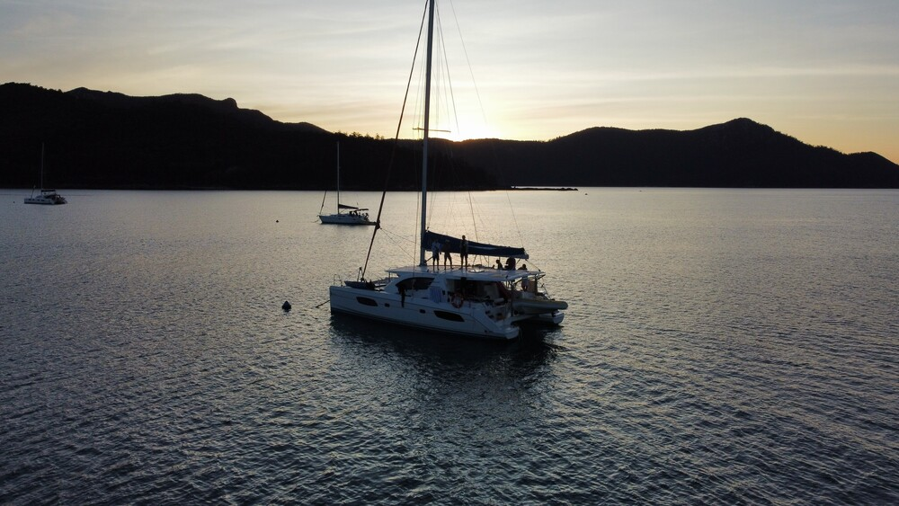
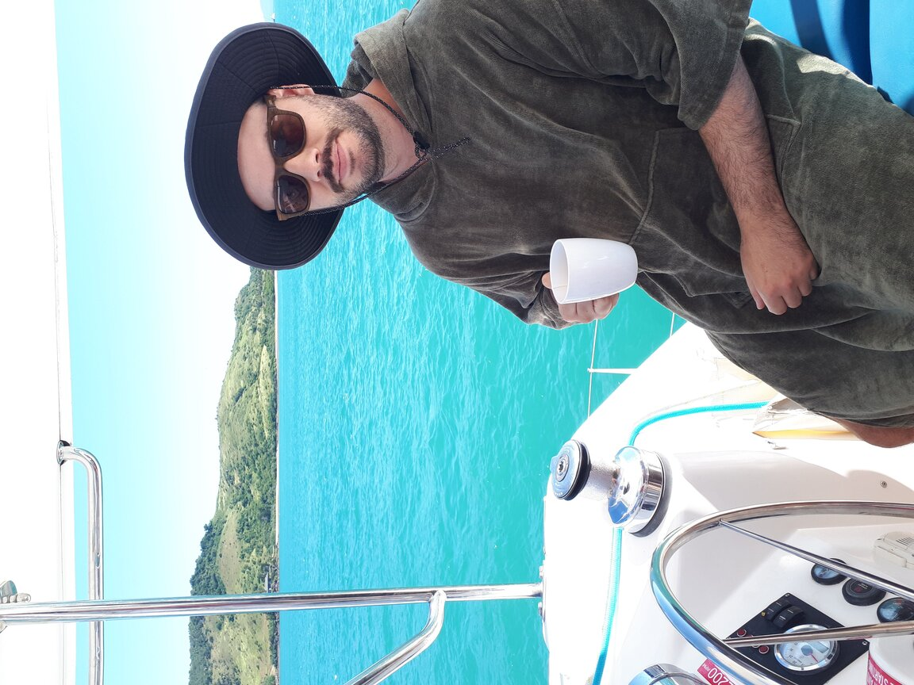
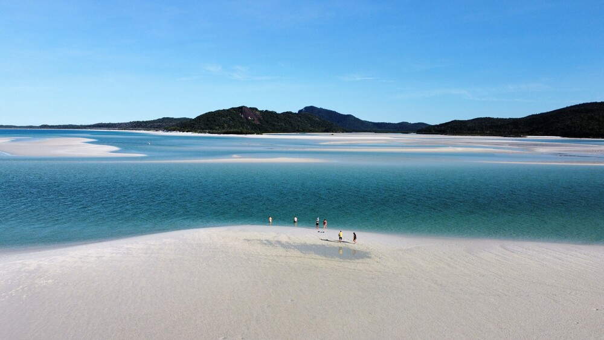
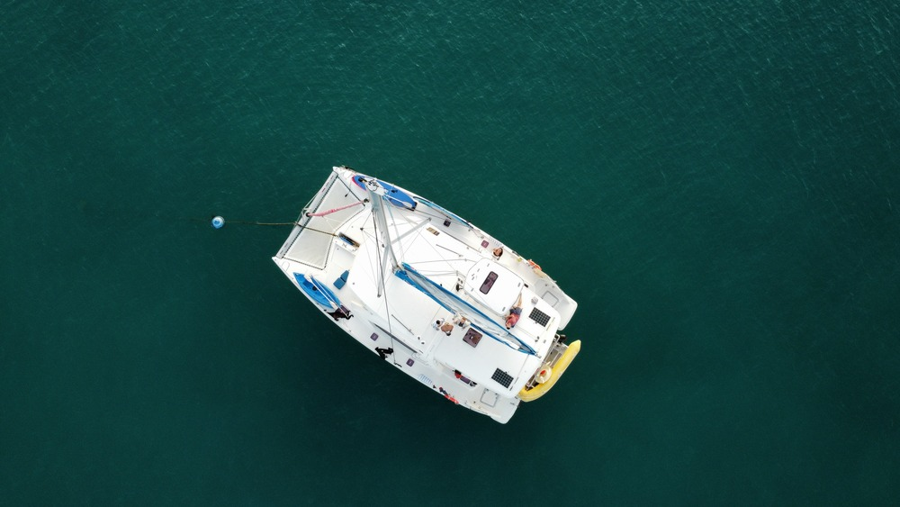
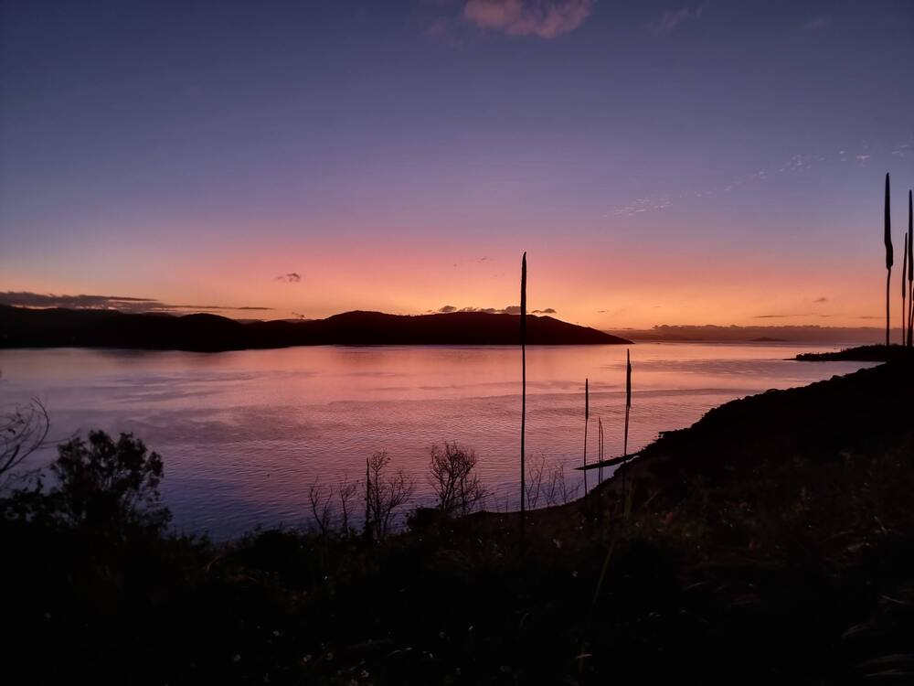
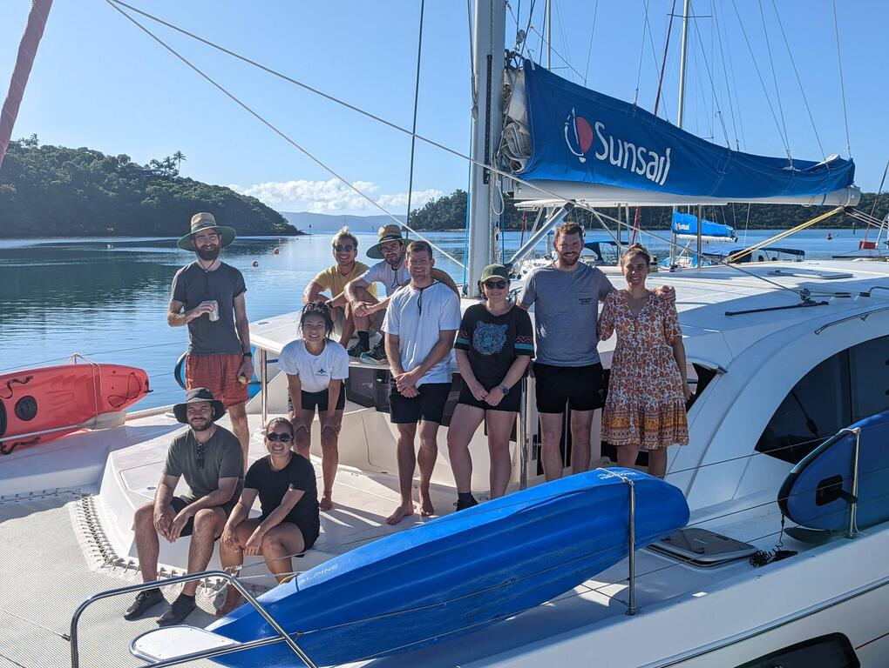

James' Journal
A collection of notes from movies, shows, walks, books, and trips I've experienced.
Tracks
- South West Arm Pool — Small estuary in the Royal National Park. Accessible by boat or walking down Winifred Falls Firetrail from Wurumbul Road (4km return). Two or three good jump rocks and rope swings. Best at high tide.
- Rob Roy Glacier Track — Cool approach down a dirt road, over a bunch of river crossings. Long uphill hike through some stunning landscapes. Rewarding view of Rob Roy Glacier at the end.
- Grand Canyon Track — In the Blue Mountains, this track is lined with gloworms at night. Pretty amazing on a starry night.
Movies
- Dominion — Confronting and very difficult to watch. Very important though.
- Mad Max: Fury Road — Amazing visuals and entertaining characters.
- Book of Eli — Post apocalyptic journey with a big twist at the end.
- John Wick — Perfect balance of unrealistic action and fun.
Series
- The Mandalorian — Nostalgic, yet new perspective to the Star Wars world.
- Avatar: The Last Airbender — Easy to watch and some nuggets of wisdom.
- The Witcher — Great universe and characters.
- Formula 1: Drive to Survive — Got me into Formula 1.
- Middleditch & Schwartz — A series of improv comedies on Netflix; very funny.
- Fleabag — Dark British humour with a very unique style, commonly breaking the fourth wall for exposition.
Trips
Whitsundays sailing — May 2022
This was a trip organised by Mandy. We had 10 people (Myself, Alex, Gemma, Andy, Holly, Matt, Fletch, Audi, Mandy, Tom) on a double hull catamaran for 10 days.

- Wednesday, 25th May 2022 — Train to Sydney and fly to Proserpine airport arriving in the afternoon. We caught a private bus to Shute Harbour to our catamaran. We spent the night on the boat at the pier.
- Thursday, 26th May 2022 — The morning was spent getting an induction from Gil on boat operation and local navigation. Without any experience driving within the group, I ended up as the official captain. We were taught how to drive under engines and also with the head sail out, but not the main sail. After lunch we dropped Gil off and headed for our first anchorage at Happy Bay (after the moores were taken at Sandy Bay). Happy Bay had an abandoned resort which we explored on the Friday morning. Gil's catch phrase: End Of Holidays
- Friday, 27th May 2022 — From Happy Bay we sailed across to Sawmill Bay. First time using the headsail and getting comfortable with it. Sawmill Bay had a short walk which took us around to another beach.

- Saturday, 28th May 2022 — In the morning took the summit track up to Whitsunday Peak. Unparalleled views. Great place for an engagement. In the afternoon we did some snorkelling at False Nara and then moved on to Nara inlet for the night. No swimming there due to sharks, which we didn't get to see. Good calm location for the night.
- Sunday, 29th May 2022 — The next day we took the track up to the Cairne while the girls visited another abandoned resort and found some coconuts. The walking track was deemed strenuous and bloke at the bottom told us we would perish. It wasn't too bad. Spent the night at Macaow Inlet.
- Monday, 30th May 2022 — Drove to Hamilton Island (Hamo) and docked for the night. Afternoon we did a hike to Passage Peak. Picked up Mandy from her flight. Waiting for Tom to arrive on the Tuesday morning since he had Covid symptoms. In the afternoon we played some table tennis and had a swim in the resort pools.
- Tuesday, 31th May 2022 — Sunrise at One Tree Hill, then the boys played putt putt. Did some sailing on the mini yaughts in the bay at Hamo and then Tom arrived. We set off and arrived at Whitehaven. Spent the afternoon at Whitehaven Beach.
- Wednesday, 1st June 2022 — From Whitehave we crossed the channel to Chalkies for some snorkelling. Spent some time trawling for a moore. Snorkelling was good. In the afternoon we stopped at Hill Inlet for some awesome views. Stayed at Tongue Bay and saw heaps of turtles breaching for air.

- Thursday, 2nd June 2022 — Andy's birthday and a few hungover passengers. We drove to Butterfly Bay and did some kayaking around the reefs. Great spot right in the end of the inlet where we saw stingrays, turtles, and small reef sharks. Definite highlight.

- Friday, 3rd June 2022 — Travelled down to Sandy Beach via Langford Reef and Cockatoo Point. Snorkelling at Langford reef was awesome. Swum with a small turtle for a while and saw the stainless steel (Terry the) turtle. Cockatoo Point was even better. The reef there was amazing and was able to swim with an even larger turtle. Fish life was the best we'd seen here. At Sandy Beach (South Molle Island) we did an evening hike to Balancing Rock and abandoned (cyclone) resort. Saw a bunch of butterlies through the trees which was pretty magical. Lots of fish around the boat. Flying fish ran head first into boat.

- Saturday, 4th June 2022 — The last drive back to Shute Harbour only took 30 minutes or so and we dropped off the boat and caught a maxi taxi to Airly Beach. We spent a couple of hours hanging out at the lagoon and then taxied to our flights back home.

Books
- Ender's Game Novel Series — Sci-fi that follows a child as he trains to defeat an alien civilisation. I particularly liked the Shadow Series that followed Bean, one of the side characters in Ender's Game.
- Life of Pi — Philosophical novel following a young boy lost at sea.
- Wayfarers Series — Set in a multi-species universe full of nice characters.
- Sapiens — Incredibly interesting. The second book, Homo Deus, is also a great read.
- Wheel of Time Series — Read 3/14 so far, but I like it.
- Slapstick — A bizzare story with a meandering plot, but jammed full of thought provoking ideas and very entertaining read.